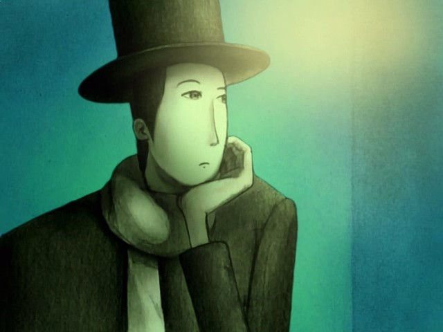

A naplóról
The night gives way to dawn.
Sprinkled with the pleasant morning light, I opened my map.
The journey continues.
My name is Tortov Roddle.
I am a traveler from Tortalia.
Így kezdõdik Tortov Roddle naplója, az Aru Tabibio no Nikki. A hatrészes kis animesorozat hat bejegyzésnek felel meg a fõszereplõ naplójában.
Tortov Roddle egy szürreális világ vándora. Hosszú, piszkafa lábain ingó disznó hátasán járja a vidéket, mely igen erõsen emlékeztet a Dali-képek álomszerû elefántjaira. Nem véletlen a kapcsolat a szürrealista festõvel. Az egész anime kézzel rajzolt, így, mint mûvészeti alkotás hívja magára a figyelmet. De mind a részek alatt egyedüli hanghatásként lejátszódó dallamok, mind a felelevenített történetek formája is érdekes módon euórpai kontextusba sorolja a japán animét. Andersen-mesék érkeztek keletrõl.
Egy-egy bejegyzés (rész) mindössze két és fél perc. Érdemes megtekinteni õket! Alább találhatók linkek az online megetekintéshez:
A minisorozat részei
| Cím | Leírás |
|---|---|
| Elsõ rész | The city of the light |
| Második rész | Midnight Café |
| Harmadik rész | The Little Town`s Movie Gathering |
| Negyedik rész | Moonlight Travellers |
| Ötödik rész | The Melancholy Rain |
| Hatodik rész | The Flower and the Lady |